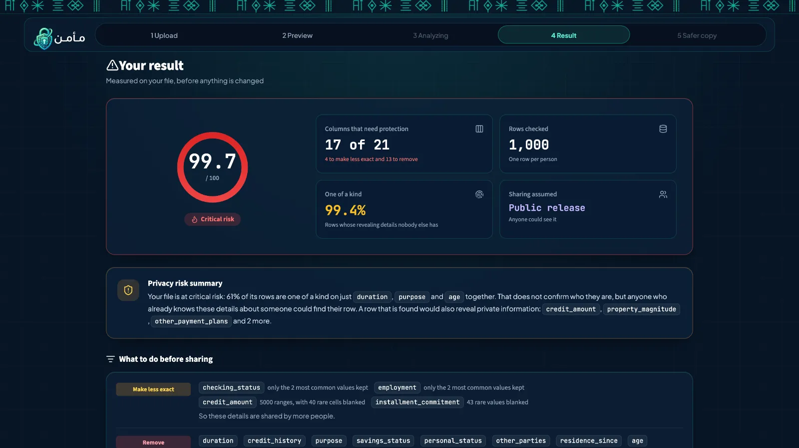
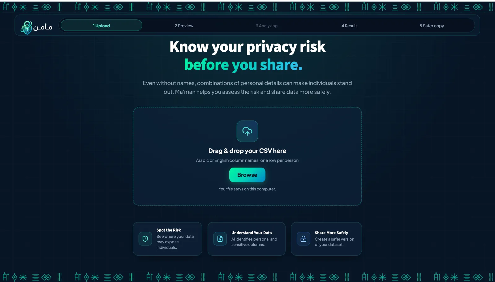

Know your privacy risk
before you share.
Even without names, a few ordinary details — age, neighbourhood, job — can single a person out. Ma'man reads a CSV file, measures how easily its rows could be re-identified, and builds a safer copy that keeps as much of the data as it can.
A local-first research prototype: it runs on your own Mac (Apple Silicon), so files never leave the computer. It is not a hosted service.

Deleting the name column isn't anonymisation.
Datasets get shared for research, reporting and analysis all the time. The usual step is to drop names and ID numbers — but the columns that remain still describe people. When a combination of them is rare, anyone who already knows those few facts about someone can find that person's row, and with it everything else the row says.
Illustrative example with invented values.
people in a linkage test on German Credit could still be matched to exactly one row after names alone were removed.
of the 1,000 rows in that file were one of a kind on the details someone might already know.
matched exactly one row in Ma'man's safer copy, under the same test conditions.
Drop the file and watch the analysis.
Drag the sample file into the box (or press play). The steps, labels and numbers are replayed from a real run of the local app — this page doesn't upload or analyse anything.
- 1Read the table
- 2Label columns
- 3Measure risk
- 4Build safer copy
Replay of a real run in the local app: German Credit, 1,000 rows, "anyone could see it" (public release, k ≥ 10). Column labels shown are the app's own output for the first five columns.
The model reads. The code counts.
Ma'man's core rule: a small language model interprets what each column means and explains the result in plain words, while deterministic Python code computes every number and applies every protection. The model never produces a score.
-
01
Read the table
Finds the real header row, skips title and note lines, detects the delimiter and encoding (UTF-8 / Windows-1256), and decides whether rows are people or aggregate statistics.
Code -
02
Label every column
Fixed rules catch obvious identifiers first. Then Qwen2.5-3B-Instruct, fine-tuned with LoRA and given the 3 most similar labelled examples retrieved with multilingual E5, labels the rest: direct identifier, quasi-identifier, sensitive, or record key.
LLM + retrieval -
03
Measure the risk
Groups rows that share the same identifying details and computes a 0–100 indicator: 100 × the average of 1/k, where k is the group size. Also checks l-diversity for sensitive categories and the residual risk if an attacker knows one more column.
Code -
04
Protect each column by its role
Removes identifiers and free text, masks e-mail or phone only when that stays safe, and generalises the revealing details (age bands, month/year dates, ranges) until every group has at least k people for the chosen audience.
Code -
05
Re-check and explain
Re-measures the risk on the exported CSV itself, so the report always matches the file. The model writes a plain-language summary, and code verifies every number in it.
Code + LLM
Protection depends on who will see the data
At most 5% of values may be blanked to reach the target; otherwise the column is generalised further or removed.
Reading the indicator
An indicator of how distinguishable rows are within the file — not a probability that someone will be identified. A low score supports a decision; it doesn't guarantee anonymity.
Five screens, from upload to safer copy.
Screenshots of the Streamlit app running locally on German Credit. The interface is in English and accepts Arabic or English column names.

Measured on data the model never saw.
236 hand-labelled columns from 20 datasets, split by dataset so no file appears in two splits: 110 columns for training, 24 for validation and 102 from 9 held-out datasets for testing (65 English, 27 Arabic, 10 Arabizi).
Column-role classification · Macro-F1
102 held-out columns · higher is betterExact match rises from 46% to 75.5%. E5 vs char n-grams: +0.020 Macro-F1, but the difference is not statistically significant (McNemar p = 0.65), and the final setup was chosen on this same test set — so it should be confirmed on a new hold-out.
Public-release setting, 1,000 rows. 4 columns made less exact, 13 removed, 4 kept.
On 27 held-out Arabic column names and values (English: 72.3%, Arabizi: 70%).
Including each technique on its own, and every exported CSV checked as text: no original identifiers, every group ≥ k, report equals file.
Honest limits
- The score is an indicator within the file, not a probability, and the safer copy is not guaranteed to be anonymous. It supports human and regulatory review; it doesn't replace it.
- Extra columns are checked one at a time; an attacker who knows several extra details together could do better (an optional "strictest" mode covers this).
- The column search is greedy, so it may keep one column fewer than the best possible.
- Runs locally on macOS with Apple Silicon (MLX); first setup downloads about 1.7 GB of models. There is no public online version.
- Qwen2.5-3B-Instruct (4-bit)
- LoRA
- MLX
- multilingual-e5-small
- RAG
- k-anonymity
- l-diversity
- Python · pandas
- Streamlit
Want to see more?
The source code is private. A live walkthrough of the app is available on request from the team.
Sultanah Alotaibi · Wafa Alotaibi · Samar Alfallaj
Generative AI Application Engineering Bootcamp using Large Language Models — Tuwaiq Academy, 2026.